출발
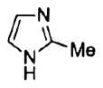
2-Methylimidazole1
24장 항말라리아제 3종 + 25장 항생제 4종 + 26장 항진균제 2종. KEY 24-1 Conrad–Limpach · 25-1 Ozonolysis · 25-2 Gould–Jacobs · 25-3 Delépine · 25-4 MPV 환원 · 25-5 Chelation model · 25-6 Staudinger · 26-1 Corey–Chaykovsky가 나와요. 가릴 항목을 고르고, 가려진 칸을 눌러 답을 확인하세요. 다시 누르면 또 가려집니다. 구조 그림은 모두 교재 스킴에서 가져왔어요.
두 단계로 끝난다. 혼산(HNO₃/H₂SO₄)으로 이미다졸 5번 자리에 나이트로화하고, 2-chloroethanol로 고리 질소를 N-알킬화한다. 어느 질소·어느 탄소에 붙는지가 전부.
| 단계 | 핵심반응 | 무엇이 바뀌나 |
|---|---|---|
| 1 | 나이트로화 (SEAr) | 이미다졸 C5–H → C5–NO₂ |
| 2 | N-알킬화 (SN2) | 고리 N–H → N–CH₂CH₂OH |

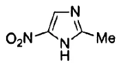
나이트로화 · 혼산에서 질산이 물을 잃고 nitronium(NO₂⁺)이 된다. 전자가 풍부한 이미다졸의 5번 자리가 이를 공격하고, HSO₄⁻가 양성자를 떼면 방향족성이 돌아온다.
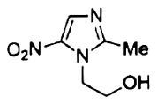
N-알킬화 · 고리 질소가 2-chloroethanol을 SN2로 공격한다. NO₂가 붙은 쪽 질소는 전자가 빠져 친핵성이 약하므로, 반대쪽(NO₂에서 먼) 질소에 하이드록시에틸이 붙는다.
Conrad–Limpach (KEY 24-1)로 퀴놀린-4-올 골격을 만드는 것이 전부다. 아닐린 + β-케토에스터 → 이민 → 250 °C에서 6π 전자고리화. 그다음 에스터를 가수분해·탈탄산하고, OH를 POCl₃로 Cl로 바꿔 아민과 SNAr한다.
| 단계 | 핵심반응 | 무엇이 바뀌나 |
|---|---|---|
| 1 | 이민 형성 | ArNH₂ + 케톤 → ArN=C |
| 2 | Conrad–Limpach (KEY 24-1) | 250 °C 전자고리화 → 4-하이드록시퀴놀린 |
| 3 | 가수분해 → 탈탄산 | CO₂Et → CO₂H → −CO₂ |
| 4 | 염소화 (POCl₃) | 4-OH → 4-Cl |
| 5 | SNAr | 4-Cl → 4-NHR |
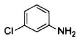
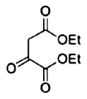
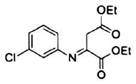
이민 · 아닐린 질소가 케톤 C=O를 공격하고 물이 빠진다. 에스터 두 개 중 케톤 쪽만 반응한다.
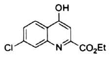
Conrad–Limpach (KEY 24-1) · 이민의 엔올형이 고리를 향해 6π 전자고리화를 일으켜 새 C–C 결합을 만들고, EtOH가 빠지며 방향족 4-하이드록시퀴놀린이 된다. Cl이 meta에 있어 고리화는 Cl의 para 쪽(덜 막힌 자리)에서 일어나 7-chloro가 된다.
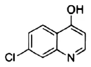
가수분해 → 탈탄산 · 에스터를 카복실레이트로 바꾼 뒤 가열하면 C2의 COOH가 CO₂로 빠진다(고리 질소가 음전하를 받아 줘 쉽게 일어난다).
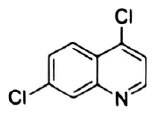
염소화 · 4-OH(실제로는 4-퀴놀론 호변이성체)의 산소를 POCl₃가 떼어 가며 Cl로 바꾼다. 이탈기를 못 만드는 OH를 좋은 이탈기로 바꾸는 단계.
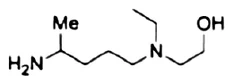
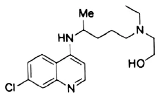
SNAr · 1차 아민이 C4를 공격한다. 생긴 음전하를 고리 질소가 받아 주기 때문에(Meisenheimer) Cl⁻가 빠진다. 퀴놀린의 2·4번 자리가 SNAr에 유리한 이유가 이것.
앞은 하이드록시클로로퀸과 같은 Conrad–Limpach. 다른 점은 4-OH를 POBr₃로 Br로 바꾼 뒤 n-BuLi 리튬화 → CO₂ 카복실화로 COOH를 심고, 2-pyridyllithium으로 케톤을 만든 다음 H₂/PtO₂로 피리딘 고리만 환원한다는 것.
| 단계 | 핵심반응 | 무엇이 바뀌나 |
|---|---|---|
| 1 | Conrad–Limpach (KEY 24-1) | 아닐린 + β-케토에스터 → 4-하이드록시퀴놀린 |
| 2 | 브롬화 (POBr₃) | 4-OH → 4-Br |
| 3 | 리튬화 + 카복실화 | Ar–Br → Ar–Li → Ar–COOH |
| 4 | 산–염기 → 친핵성 부가·제거 | COOH → 아릴 케톤 |
| 5 | 수소화 (H₂/PtO₂) | 케톤 환원 + 피리딘 → 피페리딘 |
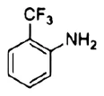
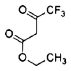
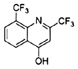
Conrad–Limpach (KEY 24-1) · PPA(폴리인산)가 산 촉매로 이민을 만들고, 150 °C에서 전자고리화 후 EtOH가 빠진다. 아닐린의 CF₃가 8번, 케토에스터의 CF₃가 2번으로 간다.
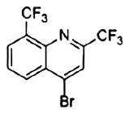
브롬화 · POCl₃의 브로민 판. 4번 산소가 인을 공격해 좋은 이탈기(−PO₂Br)가 되고 Br⁻이 들어온다. 다음 리튬–할로젠 교환을 위해 Cl이 아니라 Br로 바꾼다.
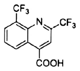
리튬화 → 카복실화 · 리튬–할로젠 교환으로 Ar–Li를 만들고, 여기에 CO₂를 불어 넣으면 카복실레이트가 된다. 산 처리로 COOH.
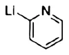
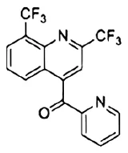
부가–제거 · 유기리튬이 먼저 COOH의 양성자를 떼어 카복실레이트를 만든다. 반응성이 낮은 친전자체지만 2-pyridyllithium이 워낙 세서 카보닐에 부가하고, 산성 워크업에서 물이 빠져 케톤이 된다. (그래서 2당량이 필요하다)
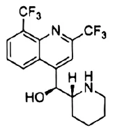
수소화 · 케톤이 먼저 라세미 알코올로 환원되고, 생긴 OH와 피리딘 N이 수소결합한 형태(A)가 주 중간체가 된다. 그 상태에서 피리딘 고리가 OH 반대쪽 면에서 수소화돼 (R,S)·(S,R) 쌍이 주생성물이 된다. 퀴놀린 고리는 CF₃ 때문에 전자가 부족해 환원되지 않는다.
3번 자리의 exo-메틸렌을 오존분해(KEY 25-1)해 엔올로 바꾸고, SOCl₂로 Cl을 넣어 3-chlorocephem을 만든다. 7번 아마이드는 PCl₅ → 가수분해로 끊어 내고(곁사슬 교체), 혼성 무수물로 phenylglycine을 다시 붙인 뒤 보호기를 푼다.
| 단계 | 핵심반응 | 무엇이 바뀌나 |
|---|---|---|
| 1 | 환원적 오존분해 (KEY 25-1) | C=CH₂ → 케톤 → 엔올(3-OH) |
| 2 | 아마이드화 | 7-NH₂ → 7-NHC(O)CH₂-티오펜 |
| 3 | 염소화 (SOCl₂) | 3-OH → 3-Cl |
| 4 | PCl₅ → 가수분해 | 7-아마이드 절단 → 7-NH₂ |
| 5 | 혼성 무수물 아마이드화 | phenylglycinyl amide 결합 |
| 6 | 탈보호 (pH 1.5 → H₂/Pd-C) | 엔아민·p-니트로벤질 제거 |
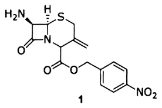
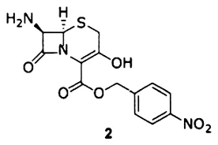
오존분해 (KEY 25-1) · O₃가 exo C=C에 1,3-쌍극자 고리화로 붙어 1차 오조나이드 → retro-[3+2] → Criegee 중간체 → 2차 오조나이드. NaHSO₃로 환원적 work-up을 하면 케톤 + 포름알데하이드가 되고, 케톤이 호변이성해 엔올(3-OH)로 간다.
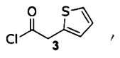
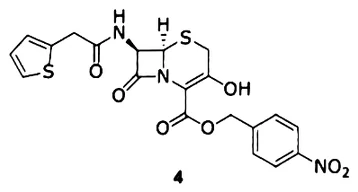
아마이드화 · 7번 아민을 산염화물로 아실화해 보호한다. 다음 SOCl₂ 단계에서 아민이 방해하지 않도록 막는 것.
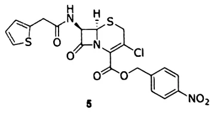
염소화 · SOCl₂/DMF로 만든 클로로이미늄(Vilsmeier형)이 엔올 산소를 활성화하고 Cl⁻가 들어온다. 이 3-Cl이 cefaclor의 특징.
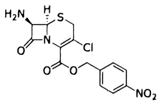
아마이드 절단 · PCl₅가 아마이드를 이미노일 클로라이드로 바꾸고, 이어 가수분해하면 C–N이 끊어져 7-아민이 돌아온다. 티오펜아세틸은 임시 보호기였던 셈.
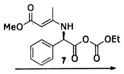
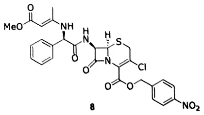
혼성 무수물 · 아민이 덜 막힌 쪽 카보닐을 골라 공격해 아마이드가 된다. phenylglycine의 NH₂는 엔아민(메틸 아세토아세테이트와 만든 것)으로 가려져 있다.
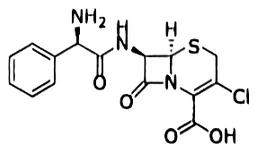
탈보호 두 번 · 산성(pH 1.5)에서 엔아민이 가수분해돼 NH₂가 드러나고, 수소화 분해로 p-니트로벤질 에스터가 떨어져 COOH가 된다. β-락탐은 두 조건 모두에서 살아남는다.
F가 셋 달린 니트로벤젠에서 출발해 SNAr → O-알킬화 → Hill 환원적 고리화로 벤즈옥사진을 만들고, Gould–Jacobs (KEY 25-2)로 퀴놀론 고리를 올린다. 마지막에 남은 7-F를 SNAr로 N-methylpiperazine과 바꾼다. 아래에 Levofloxacin (S)-(−)체 합성법이 이어진다.
| 단계 | 핵심반응 | 무엇이 바뀌나 |
|---|---|---|
| 1 | SNAr (KOH) | Ar–F → Ar–OH |
| 2 | O-알킬화 | Ar–OH → Ar–O–CH₂COCH₃ |
| 3 | 환원적 고리화 (Hill) | NO₂ 환원 → 이민 → 벤즈옥사진 |
| 4 | Gould–Jacobs 축합 (KEY 25-2) | 아민 + EMME → 엔아민 |
| 5 | in situ 고리화 (PPA) | 퀴놀론 고리 형성 |
| 6 | 에스터 가수분해 | CO₂Et → CO₂H |
| 7 | SNAr | 7-F → 7-피페라진 |
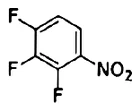
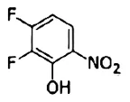
SNAr · NO₂의 ortho 자리 F가 가장 잘 치환된다. 세 F 중 음전하를 NO₂가 직접 받아 줄 수 있는 자리만 반응한다.
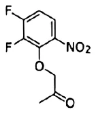
O-알킬화 · 페녹사이드가 chloroacetone을 SN2로 공격한다. KI는 Cl을 I로 바꿔 반응을 빠르게 한다(Finkelstein).
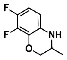
환원적 고리화 · NO₂가 NH₂로 환원되자마자 같은 분자의 케톤과 이민을 만들고(중간체), 이민이 계속 수소화돼 2차 아민이 된다. 한 번에 6원 벤즈옥사진 고리가 닫힌다.
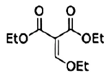
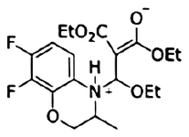
Gould–Jacobs (KEY 25-2) · 아민 질소가 EMME의 =CH–OEt 탄소를 부가–제거로 공격해 EtOH가 빠진다. 엔아민(알킬리덴 말로네이트)이 생긴다.
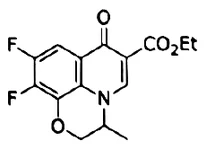
in situ 고리화 · PPA가 에스터 카보닐을 활성화하고, 벤젠 고리가 분자내에서 공격해 퀴놀론의 4-옥소 고리가 닫힌다. EtOH가 빠지며 방향족화된다.
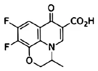
가수분해 · 3번 에스터를 카복실산으로. 이 COOH와 4-C=O가 세균 topoisomerase의 Mg²⁺를 무는 자리다.
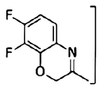
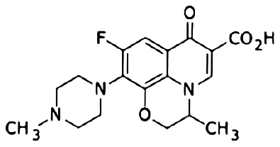
SNAr · 남은 두 F 중 7번(C=O의 para 쪽)이 치환된다. 음전하를 4-케톤이 받아 주기 때문. 8번 F는 고리에 묶여 남는다.
Ofloxacin은 입체중심이 하나(옥사진 3번 — 메틸이 붙은 탄소)인데, 위 경로는 평면 이민을 수소화하므로 양쪽 면이 똑같아 라세미체로 나온다. 그중 활성이 센 (S)-(−)체만 따로 만든 것이 levofloxacin [(S)-(−)-9] = (S)-(−)-ofloxacin이다. 경로가 뒤집힌다 — 벤즈옥사진을 먼저 만들지 않고 β-케토에스터 → 엔올 에터 → 키랄 아민과 교환 → SNAr로 퀴놀론 → SNAr로 옥사진 순으로 간다. 입체는 (S)-(+)-2-amino-1-propanol에서 그대로 들어온다(Grohe–Heitzer 합성).
| 단계 | 핵심반응 | 무엇이 바뀌나 |
|---|---|---|
| 1 | 엔올 에터 형성 (orthoester) | 활성 메틸렌 → =CH–OEt |
| 2 | 부가–제거 (아민 교환) | OEt → NH–CH(CH₃)CH₂OH · 여기서 입체 확정 |
| 3 | 분자내 SNAr (NaH) | 엔아민 N이 ortho-F를 밀어내고 퀴놀론 고리 |
| 4 | 분자내 SNAr (KOH) | 알콕사이드가 C8-F를 밀어내고 옥사진 고리 · 에스터도 가수분해 |
| 5 | SNAr | C7-F → N-메틸피페라진 |
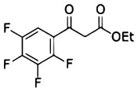
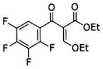
엔올 에터 · orthoformate가 산에 의해 EtOH를 잃고 옥소늄 이온이 된다. β-케토에스터 10이 엔올로 토토머화해 그 탄소를 공격하고, EtOH를 한 번 더 잃으면 =CH–OEt가 생긴다. Ciprofloxacin 3단계와 똑같은 수법.
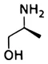
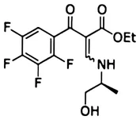
부가–제거 · 키랄 아민이 =CH–OEt 탄소를 공격하고 EtOH가 빠진다. 분자의 입체가 여기서 정해지고, 이후 단계는 그 탄소를 건드리지 않으므로 (S)가 끝까지 유지된다.
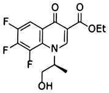
분자내 SNAr · NaH가 엔아민 N–H를 떼고, 질소 음이온이 카보닐의 ortho 쪽 C–F를 공격해 퀴놀론 고리가 닫힌다. OH는 아직 그대로. Ciprofloxacin에서는 같은 자리가 C–Cl이었다.
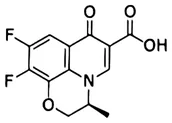
두 번째 분자내 SNAr · KOH가 1차 알코올을 알콕사이드로 만들고, 그것이 C8-F를 밀어내 벤즈옥사진 고리가 닫힌다 — 삼환 골격 완성. 같은 조건에서 3번 에스터도 카복실산으로 가수분해된다.
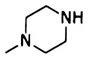
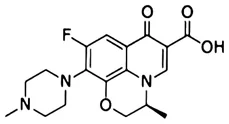
SNAr · 남은 C7-F를 N-메틸피페라진이 치환한다. 4-케톤이 음전하를 받아 주는 자리라서 여기만 반응한다. 생성물은 위 racemic ofloxacin의 (S)-(−) 거울상 하나.
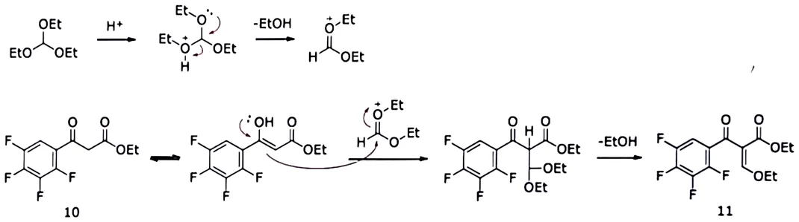
| 길 | 어디서 입체를 정하나 | 요점 |
|---|---|---|
| 키랄 풀 (이 교재 경로) | (S)-(+)-2-amino-1-propanol | 시약 자체가 단일 입체 → 손실 없이 (S)만 나온다 |
| 광학분할 | 라세미 중간체 또는 ofloxacin | 키랄 산과 염을 만들어 재결정 — 이론 수율 최대 50% |
| 비대칭 환원 | 위 경로 3단계의 이민 | 키랄 촉매로 한쪽 면만 수소화 (CBS 환원과 같은 생각) |
오플록사신과 달리 아실화부터 시작한다. 산염화물 + malonate 엔올레이트 → 탈에톡시카보닐화 → orthoformate로 엔올 에터 → cyclopropylamine과 부가–제거 → NaH로 SNAr 고리화. 마지막에 7-Cl을 piperazine과 SNAr.
| 단계 | 핵심반응 | 무엇이 바뀌나 |
|---|---|---|
| 1 | Claisen형 아실화 (Mg) | ArCOCl + malonate → 2-aroylmalonate |
| 2 | 탈에톡시카보닐화 (p-TsOH) | 말로네이트 → β-케토에스터 |
| 3 | 엔올 에터 형성 | HC(OEt)₃/Ac₂O → =CH–OEt |
| 4 | 부가–제거 (아민 교환) | OEt → NH-사이클로프로필 |
| 5 | SNAr 고리화 (NaH) | 퀴놀론 고리 형성 |
| 6 | 에스터 가수분해 | CO₂Me → CO₂H |
| 7 | SNAr | 7-Cl → 7-피페라진 |
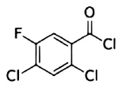
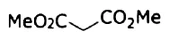
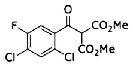
아실화 · Mg가 malonate를 마그네슘 엔올레이트로 바꾸고, 이것이 산염화물을 공격해 Cl⁻가 빠진다.
탈카보메톡시화 · 산·물 조건에서 에스터 하나가 가수분해된 뒤 β-케토산이 되어 CO₂로 빠진다. 남은 β-케토에스터가 다음 단계의 활성 메틸렌.
엔올 에터 · orthoformate가 활성 메틸렌과 축합해 =CH–OEt가 생긴다. Gould–Jacobs의 EMME를 자리에서 만들어 쓰는 셈.
부가–제거 · 아민이 =CH–OEt 탄소를 공격하고 EtOH가 빠진다. 여기서 N1의 사이클로프로필이 정해진다(퀴놀론 항균력의 핵심 치환기).
분자내 SNAr · NaH가 엔아민 N–H를 떼고, 생긴 질소 음이온이 ortho 쪽 C–Cl을 공격해 고리가 닫힌다. 케톤이 음전하를 받아 줘서 Cl⁻이 빠진다.
가수분해 · 3번 에스터 → 카복실산.
SNAr · 남은 7-Cl을 piperazine이 치환한다. 4-케톤이 음전하를 받아 주는 자리라 가능하다.
위 1단계의 2,4-dichloro-5-fluorobenzoyl chloride (1)도 교재에 합성법이 나온다. 아닐린의 NH₂를 F로 바꾸고, 메틸을 CCl₃까지 염소화한 뒤 가수분해해 카복실산을 만들고, 마지막에 SOCl₂로 산염화물로 바꾼다.
다이아조화 → 플루오로화 · NH₂가 다이아조늄(Ar–N₂⁺)이 되고, HF에서 F⁻가 들어오면서 N₂가 빠진다. 방향족에 F를 직접 넣기 어려워서 쓰는 수법(Balz–Schiemann 변형). Sandmeyer와 짝으로 외울 것 — 그쪽은 Cu(I)로 Cl·Br·CN.
라디칼 측쇄 염소화 · 빛이 Cl₂를 Cl•으로 쪼개고, 벤질 위치 C–H만 뽑아 간다(벤질 라디칼이 공명 안정화). 세 번 반복돼 CH₃ → CCl₃. 고리 쪽 EAS가 아니라 옆가지 반응인 것이 요점.
가수분해 · CCl₃는 물이 붙으면 Cl⁻를 연달아 잃고 산염화물 → 카복실산이 된다. CCl₃를 COOH의 가면으로 쓴 셈.
산염화물 · SOCl₂가 OH를 좋은 이탈기로 바꾸고 SO₂·HCl이 기체로 빠져 반응이 앞으로 간다. 이것이 위 합성 경로의 출발물질 1.
경로가 셋이다. 법1은 Henry 반응 → 환원 → 보호 → 나이트로화 → d-CSA 광학분할. 법2는 Delépine (KEY 25-3)로 1차 아민을 만들고 알돌 후 MPV 환원(KEY 25-4)을 거는데, 여기서 Chelation model (KEY 25-5)로 syn 선택성이 설명된다. 법3은 Sonogashira → Sharpless → 아자이드 개환 → Staudinger(KEY 25-6).
| 단계 | 핵심반응 | 무엇이 바뀌나 |
|---|---|---|
| 법1-1 | Henry 반응 | PhCHO + 니트로에탄올 → 니트로알코올 |
| 법1-2 | 수소화 → 아세틸화 → 나이트로화 | NO₂ → NH₂, 보호, Ar에 NO₂ |
| 법1-3 | d-CSA 광학분할 | 라세미 → D-(−)-syn |
| 법2-1 | Delépine 반응 (KEY 25-3) | α-브로모케톤 → 1차 아민 |
| 법2-2 | 알돌 (HCHO) | α-H → CH₂OH |
| 법2-3 | MPV 환원 (KEY 25-4·25-5) | 케톤 → syn 알코올 |
| 법3-1 | Sonogashira → Lindlar | Ar–I → (Z)-신나밀 알코올 |
| 법3-2 | Sharpless 에폭시화 → 아자이드 개환 | 키랄 에폭사이드 → azido diol |
| 법3-3 | Staudinger (KEY 25-6) | N₃ → NH₂ |
Henry 반응 · 니트로기가 α-H의 산성도를 크게 높여(pKa ≈ 10) 염기가 쉽게 떼고, 생긴 니트로네이트가 알데하이드에 알돌형 부가를 한다.
접촉 수소화 · 지방족 NO₂ → NH₂.
보호 · OH 둘과 NH 하나를 모두 아세틸화한다. 다음 나이트로화의 강산 조건에서 아민이 양성자화돼 고리를 비활성화하는 것을 막기 위함.
나이트로화 · 곁사슬이 o/p-지향성이라 para에 NO₂가 들어간다.
탈보호 · 아세틸 세 개를 모두 떼어 낸다.
광학분할 · d-camphorsulfonic acid와 부분입체 염을 만들어 재결정으로 가르고, 염기로 유리 아민을 되찾는다.
아마이드화 · 아민이 에스터를 공격해 MeOH가 빠진다(아미노리시스).
α-브로민화 · 엔올이 Br₂를 공격해 α-브로모케톤이 된다.
Delépine 1단계 (KEY 25-3) · 헥사메틸렌테트라민의 질소 하나가 α-브로모케톤을 SN2로 공격해 4차 암모늄 염이 된다.
Delépine 2단계 · 산성 가수분해가 반복돼 고리가 다 풀리고, 포름알데하이드 6분자 + NH₄Cl 3분자와 함께 1차 아민이 나온다. 1차 아민만 깨끗하게 얻는 고전적 방법.
아세틸화 · 다음 알돌에서 아민이 방해하지 않도록 아마이드로 막는다.
알돌 · 아마이드와 케톤 사이 α-H를 약염기가 떼고, 엔올레이트가 포름알데하이드에 부가해 CH₂OH가 붙는다.
MPV 환원 (KEY 25-4) · 알루미늄에 케톤과 iPrOH가 같이 붙고, 6원 의자형 전이상태에서 hydride가 직접 넘어간다. β-OH가 Al과 함께 bidentate chelation을 이루므로(KEY 25-5) hydride는 입체장애가 작은 쪽으로 들어와 syn 생성물만 나온다.
탈보호 · 아세틸을 떼어 아민을 되돌린다.
아마이드화 · 법 1과 같은 마무리.
Sonogashira · Ar–I와 말단 알카인을 Pd/Cu로 잇는다.
Lindlar 수소화 · 피독된 Pd라 알카인을 (Z)-알켄에서 멈춘다. 다음 Sharpless를 걸려면 알릴 알코올이 필요하다.
Sharpless 비대칭 에폭시화 · Ti–주석산 착물이 알릴 알코올의 OH를 잡고 한쪽 면만 산화한다. 여기서 두 입체중심이 정해진다.
위치선택적 개환 · 실리카가 에폭사이드를 활성화한다. 벤질 쪽 탄소는 para-NO₂ 때문에 양전하를 못 버티고 입체장애도 커서, 반대쪽(메틸렌 쪽)을 아자이드가 뒤에서 공격한다 → 입체 반전.
Staudinger (KEY 25-6) · PPh₃가 아자이드의 말단 질소를 공격해 phosphazide → N₂가 빠지며 아자-일라이드(iminophosphorane) → 물이 붙어 가수분해되면 1차 아민과 OPPh₃가 된다. 라디칼이나 나이트렌을 거치지 않는다.
아마이드화 · 마무리는 세 경로 모두 같다.
α-브로모케톤을 glycerol과 아세탈화해 1,3-dioxolane을 만드는 것이 뼈대. 남은 1차 OH는 벤조에이트로 막아 두고 CH₂Br을 imidazole로 치환한 뒤, 보호를 풀고 메실화 → 페녹사이드와 SN2로 마무리한다. 중간체 I는 여러 아졸계 항진균제의 공통 전구체.
| 단계 | 핵심반응 | 무엇이 바뀌나 |
|---|---|---|
| 1 | 아세탈화 (p-TsOH) | 케톤 + glycerol → 1,3-dioxolane |
| 2 | 벤조일 보호 | 1차 OH → OBz |
| 3 | N-알킬화 (SN2) | CH₂Br → CH₂-imidazole |
| 4 | 에스터 가수분해 | OBz → OH |
| 5 | 메실화 | OH → OMs |
| 6 | SN2 (페녹사이드) | OMs → O-aryl |
아세탈화 · 산 촉매로 케톤이 글리세롤의 1,2-OH와 고리형 아세탈(1,3-dioxolane)을 만든다. 물은 공비 증류로 뺀다. 글리세롤의 3번 OH는 남는다.
보호 · 남은 1차 OH를 벤조에이트로 막는다. 다음 단계에서 imidazole이 OH 대신 CH₂Br만 공격하게 하려는 것. 이 I는 itraconazole 등 다른 아졸계 약물의 공통 전구체다.
SN2 · 이미다졸의 친핵성 질소가 CH₂Br을 공격한다. Me₂NH는 생기는 HBr을 잡아 주는 염기.
비누화 · 벤조에이트를 떼어 1차 OH를 되돌린다.
메실화 · OH는 이탈기가 못 되므로 OMs로 바꾼다. 음전하가 세 산소에 퍼져 아주 좋은 이탈기.
Williamson형 SN2 · NaH로 만든 페녹사이드가 OMs 탄소를 공격해 다이아릴 에터가 완성된다.
법1은 리튬–할로젠 교환으로 아릴리튬을 만들어 1,3-dichloroacetone에 부가한 뒤, triazole 2당량으로 SN2 두 번. 법2는 Friedel–Crafts로 α-클로로케톤을 만들고 triazole 하나를 붙인 다음 Corey–Chaykovsky (KEY 26-1)로 에폭사이드를 만들어 두 번째 triazole로 개환한다.
| 단계 | 핵심반응 | 무엇이 바뀌나 |
|---|---|---|
| 법1-1 | 리튬–할로젠 교환 | Ar–Br → Ar–Li |
| 법1-2 | 케톤에 친핵성 부가 | Ar–Li + 케톤 → 3차 알코올 |
| 법1-3 | SN2 ×2 | CH₂Cl 둘 → CH₂-triazole 둘 |
| 법2-1 | Friedel–Crafts 아실화 | ArH → Ar–COCH₂Cl |
| 법2-2 | N-알킬화 | CH₂Cl → CH₂-triazole |
| 법2-3 | Corey–Chaykovsky (KEY 26-1) | 케톤 → 에폭사이드 |
| 법2-4 | 에폭사이드 개환 | triazole이 덜 막힌 쪽 공격 |
리튬–할로젠 교환 · n-BuLi이 Br과 Li을 맞바꾼다. 생긴 아릴리튬은 세고 불안정해 저온에서 바로 쓴다.
친핵성 부가 · 아릴리튬이 케톤 C=O를 공격해 3차 알콕사이드 → 워크업에서 3차 알코올. 양쪽 CH₂Cl은 그대로 남는다.
SN2 두 번 · 염기가 triazole N–H를 떼고, 생긴 음이온이 두 CH₂Cl을 차례로 공격한다. 2당량 이상이 필요한 이유.
Friedel–Crafts · AlCl₃가 아실륨을 만들고, F 두 개의 π-주개 효과가 겹치는 자리(한쪽의 ortho이자 다른 쪽의 para)에서 선택적으로 아실화된다.
SN2 · triazole 질소가 α-CH₂Cl을 공격한다. Et₃N이 HCl을 잡는다.
Corey–Chaykovsky (KEY 26-1) · NaH가 황염의 α-H를 떼어 dimethylsulfoxonium methylide를 만든다. 이 일라이드 탄소가 케톤을 공격해 생긴 알콕사이드가 바로 옆 탄소를 치고 들어가며 DMSO가 빠져 에폭사이드가 닫힌다. 카보닐에 CH₂를 끼워 넣는 에폭시화라서 알켄 + m-CPBA와 상호보완적이다.
개환 · triazole이 에폭사이드의 덜 막힌 말단 탄소를 뒤에서 공격한다. 3차 알코올이 드러나며 fluconazole 완성.
구조식은 골격 구조입니다. 선 끝은 메틸기, 꺾인 지점은 탄소입니다. 카드 윗선 색: 갈색 = 출발물질, 회색 = 중간체, 보라 = 시약·반응 상대, 청록 = 최종 생성물. 노란 배경은 그 단계에서 가장 자주 묻는 포인트입니다. 쐐기(굵은 삼각형) = 앞으로, 점선 쐐기 = 뒤로.
© 면역반 민서정리 @water_.color_